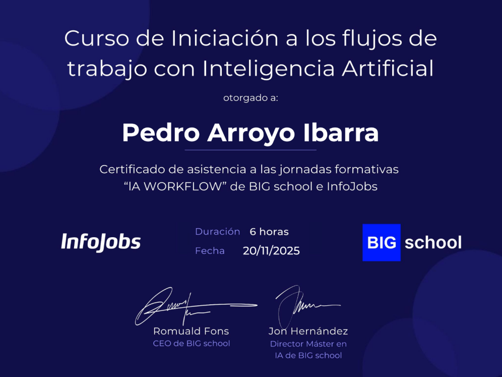

Realización de curso de Inteligencia Artificial
El 17,18 y 19 de Noviembre asistí a un curso de flujos en areas de trabajo con Inteligencia Artificial impartido por Jon Hernandez y Romuald Fons, dos importantes personas en el campo de la Inteligencia Artificial. En este curso aprendi muchas cosas sobre el funcionamiento de la IA y como puede ayudar a mejorar la productividad en diferentes areas laborales como la automatizacion de tareas del trabajo para ahorrar muchas horas con el uso de la IA.
